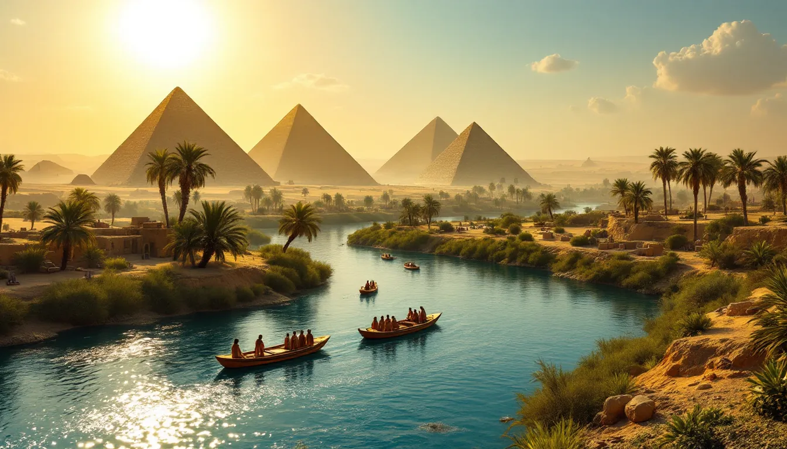
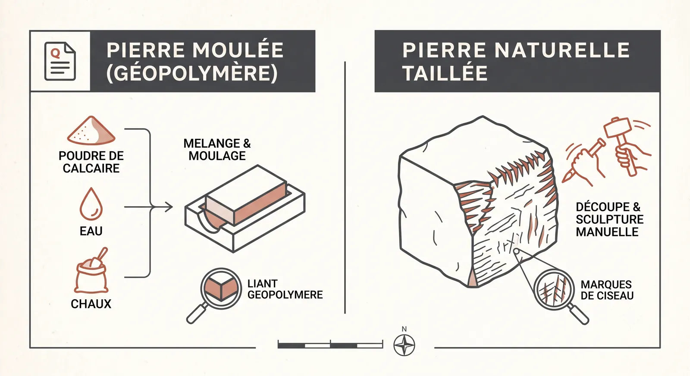
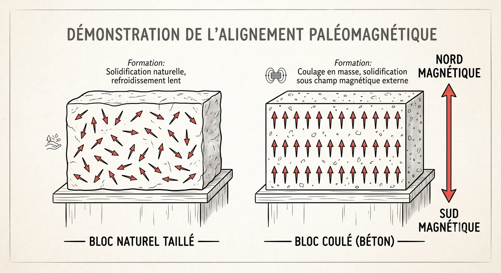
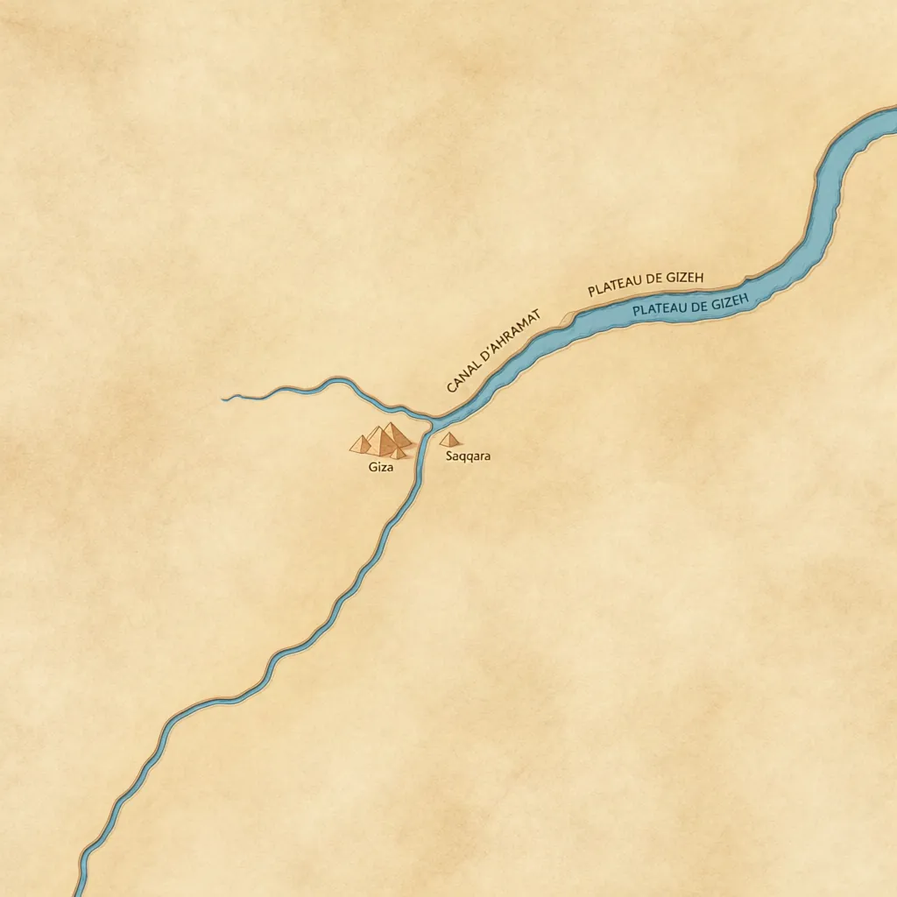
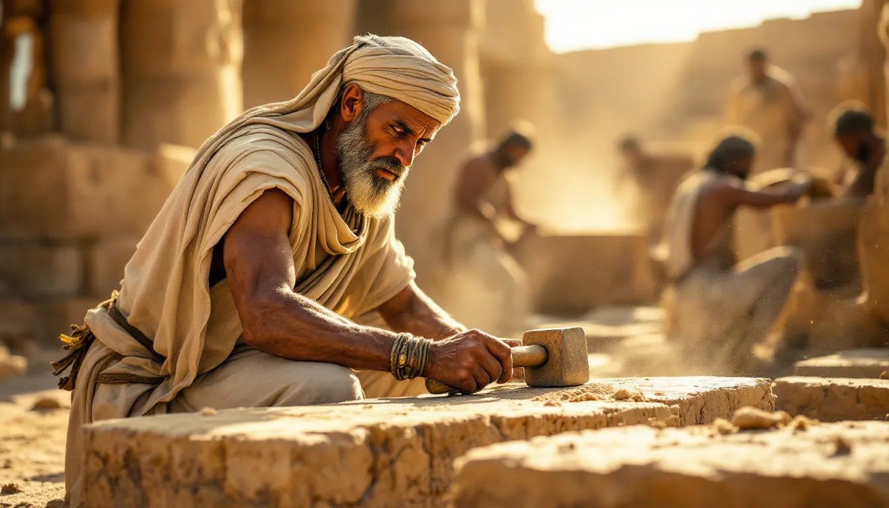

Les pyramides de Gizeh : Bloc de pierre ou béton antique ?

Les pyramides de Gizeh : Bloc de pierre ou béton antique ?
Las pirámides de Gizeh: ¿Bloque de piedra u hormigón antiguo?
The Pyramids of Giza: Stone block or ancient concrete?
Tags: Égypte ancienne, Chimie, Technologie
Reconstitution du plateau de Gizeh traversé par le canal d'Ahramat
Etiquetas: Egipto antiguo, Química, Tecnología
Reconstitución del plateau de Gizeh cruzado por el canal de Ahramat
Tags: Ancient Egypt, Chemistry, Technology
Reconstruction of Giza plateau crossed by the Ahramat canal
1. Introduction : Le mystère des blocs parfaits
1. Introduction : Le mystère des blocs parfaits
1. Introduction : Le mystère des blocs parfaits
Une idée intrigante circule depuis des années sur les réseaux sociaux : les pyramides d’Égypte n’auraient pas été construites avec des pierres taillées, mais avec du béton antique. Selon cette théorie, proposée en 1978 par Joseph Davidovits, un chimiste spécialiste des matériaux, les Égyptiens auraient moulé les blocs directement sur le chantier, comme on coule du béton aujourd’hui.
Una idea intrigante circula desde hace años en las redes sociales: las pirámides de Egipto no habrían sido construites con piedras talladas, sino con hormigón antiguo. Según esta teoría, propuesta en 1978 por Joseph Davidovits, un químico especialista en materiales, los egipcios habrían moldeado los bloques directamente en la obra, como se vierte el hormigón hoy en día.
An intriguing idea has been circulating on social media for years: the pyramids of Egypt were not built with carved stones, but with ancient concrete. According to this theory, proposed in 1978 by Joseph Davidovits, a materials chemist, the Egyptians molded the blocks directly on site, much like concrete is poured today.
Cette hypothèse séduit, car elle semble expliquer la précision extrême des pyramides. Mais que dit la science ? Grâce aux nouvelles technologies, nous pouvons désormais analyser ces monuments pour séparer les faits des spéculations.
Esta hipótesis seduce porque parece explicar la precisión extrema de las pirámides. Pero ¿qué dice la ciencia? Gracias a las nuevas tecnologías, ahora podemos analizar estos monumentos para separar los hechos de las especulaciones.
This hypothesis is appealing because it seems to explain the extreme precision of the pyramids. But what does science say? Thanks to new technologies, we can now analyze these monuments to separate facts from speculation.
2. La théorie du « calcaire réaggloméré »
2. La théorie du « calcaire réaggloméré »
2. La théorie du « calcaire réaggloméré »
La théorie de Davidovits repose sur un principe chimique : les blocs ne seraient pas des pierres naturelles, mais un matériau artificiel, un géopolymère — une sorte de « béton antique » qui durcit avec le temps. Pour fabriquer ces blocs, les ouvriers auraient mélangé :
de la roche calcaire broyée (trouvée sur place) ;
de la chaux (un liant chimique) ;
de l’eau du Nil.
La teoría de Davidovits se basa en un principio químico: los bloques no serían piedras naturales, sino un material artificial, un geopolímero, una especie de "hormigón antiguo" que se endurece con el tiempo. Para fabricar estos bloques, los obreros habrían mezclado:
roca caliza triturada (encontrada en el lugar);
cal (un aglutinante químico);
agua del Nilo.
Davidovits' theory is based on a chemical principle: the blocks are not natural stones, but an artificial material, a geopolymer—a kind of "ancient concrete" that hardens over time. To make these blocks, the workers would have mixed:
crushed limestone (found on site);
lime (a chemical binder);
water from the Nile.

Infographie comparative entre calcaire naturel et géopolymère moulé
En 2006, le chercheur Michel Barsoum (Université Drexel) a étudié les pierres de la pyramide de Dahchour. Ses conclusions apportent une nuance cruciale :
La grande majorité des blocs sont bien des pierres naturelles, extraites de carrières.
Cependant, certains blocs spécifiques, comme ceux du revêtement extérieur, pourraient avoir été coulés sur place pour obtenir une surface parfaitement lisse.
En 2006, el investigador Michel Barsoum (Universidad Drexel) estudió las piedras de la pirámide de Dahshur. Sus conclusiones aportan un matiz crucial:
La gran mayoría de los bloques son piedras naturales, extraídas de canteras.
Sin embargo, algunos bloques específicos, como los del revestimiento exterior, podrían haber sido vertidos en el lugar para obtener una superficie perfectamente lisa.
In 2006, researcher Michel Barsoum (Drexel University) studied the stones of the pyramid of Dahshur. His conclusions provide a crucial nuance:
The vast majority of the blocks are indeed natural stones, extracted from quarries.
However, some specific blocks, such as those of the outer casing, could have been poured on site to obtain a perfectly smooth surface.
3. Le verdict du magnétisme : l’étude de 2012
3. Le verdict du magnétisme : l’étude de 2012
3. Le verdict du magnétisme : l’étude de 2012
Une autre preuve scientifique vient de la physique. En 2012, les chercheurs Igor Túnyi et Ibrahim A. El-hemaly ont publié une étude dans Europhysics News en utilisant le paléomagnétisme, une technique qui analyse les traces magnétiques dans les roches.
Otra prueba científica proviene de la física. En 2012, los investigadores Igor Túnyi e Ibrahim A. El-hemaly publicaron un estudio en Europhysics News utilizando el paleomagnetismo, una técnica que analiza las huellas magnéticas en las rocas.
Another scientific proof comes from physics. In 2012, researchers Igor Túnyi and Ibrahim A. El-hemaly published a study in Europhysics News using paleomagnetism, a technique that analyzes magnetic traces in rocks.

Schéma de l'orientation paléomagnétique des particules de fer
Leur découverte est surprenante : dans certains blocs, les particules magnétiques sont toutes alignées vers le nord. Ce phénomène se produit lorsque un matériau est liquide et sèche sur place. Si les blocs avaient été transportés depuis une carrière, ces particules seraient orientées dans tous les sens, sans ordre précis.
Su descubrimiento es sorprendente: en ciertos bloques, las partículas magnéticas están todas alineadas hacia el norte. Este fenómeno ocurre cuando un material es líquido y se seca en el lugar. Si los bloques hubieran sido transportados desde una cantera, estas partículas estarían orientadas en todas direcciones, sin un orden específico.
Their discovery is surprising: in certain blocks, the magnetic particles are all aligned toward the north. This phenomenon occurs when a material is liquid and dries in place. If the blocks had been transported from a quarry, these particles would be oriented in all directions, with no specific order.
Mais attention : cette observation ne concerne que l’intérieur des pierres, et non l’orientation de la pyramide elle-même. Les faces de la Grande Pyramide sont alignées sur les points cardinaux avec une précision extraordinaire (0°3’6’’ d’écart). Même si cette découverte intéresse les partisans du béton, elle ne prouve pas que toute la pyramide est artificielle.
Pero cuidado: esta observación solo concierne al interior de las piedras, y no a la orientación de la pirámide en sí. Las caras de la Gran Pirámide están alineadas con los puntos cardinales con una precisión extraordinaria (0°3'6'' de desviación). Aunque este descubrimiento interesa a los defensores del hormigón, no prueba que toda la pirámide sea artificial.
But beware: this observation only concerns the inside of the stones, and not the orientation of the pyramid itself. The faces of the Great Pyramid are aligned with the cardinal points with extraordinary precision (0°3'6'' deviation). Even if this discovery interests proponents of concrete, it does not prove that the entire pyramid is artificial.
4. L’autoroute perdue : comment transporter les géants ?
4. L’autoroute perdue : comment transporter les géants ?
4. L’autoroute perdue : comment transporter les géants ?
Si la plupart des pierres sont naturelles, comment les Égyptiens ont-ils transporté des blocs de plusieurs tonnes ? La réponse se trouve dans l’eau.
Si la mayoría de las piedras son naturales, ¿cómo transportaron los egipcios bloques de varias toneladas? La respuesta se encuentra en el agua.
If most of the stones are natural, how did the Egyptians transport blocks weighing several tons? The answer is found in water.
En 2024, l’équipe de la professeure Eman Ghoneim a découvert le « bras d’Ahramat », une branche disparue du Nil, aujourd’hui ensevelie sous le sable. Pour la localiser, les scientifiques ont utilisé :
l’imagerie satellite radar ;
des sondages géophysiques ;
des carottages (prélèvements de cylindres de terre profonde).
En 2024, el equipo de la profesora Eman Ghoneim descubrió el "brazo de Ahramat", una rama desaparecida del Nilo, hoy sepultada bajo la arena. Para localizarla, los científicos utilizaron:
imágenes satelitales de radar;
sondeos geofísicos;
testigos de perforación (muestras de cilindros de tierra profunda).
In 2024, the team of Professor Eman Ghoneim discovered the "Ahramat branch", a lost branch of the Nile, today buried under the sand. To locate it, scientists used:
satellite radar imaging;
geophysical surveys;
sediment coring (samples of deep earth cylinders).

Carte géoarchéologique du cours du bras d'Ahramat
Cette branche était une véritable autoroute logistique :
Longueur : 64 km ;
Largeur : entre 200 et 700 mètres (jusqu’à 1 km par endroits) ;
Profondeur : 2 à 8 mètres (voire 25 m à certains points) ;
Proximité : elle passait juste à côté des chantiers de Gizeh et Saqqara.
Esta rama era una verdadera autopista logística:
Longitud: 64 km;
Ancho: entre 200 y 700 metros (hasta 1 km en algunos lugares);
Profundidad: de 2 a 8 metros (incluso 25 m en algunos puntos);
Proximidad: pasaba justo al lado de las obras de Gizeh y Saqqara.
This branch was a true logistical highway:
Length: 64 km;
Width: between 200 and 700 meters (up to 1 km in some places);
Depth: 2 to 8 meters (even 25 m at certain points);
Proximity: it passed right next to the construction sites of Giza and Saqqara.
L’Histoire confirme cette découverte. Nous possédons le « Journal de Merer », un document historique écrit par un inspecteur qui dirigeait une équipe de bateliers. Merer y décrit concrètement comment ses hommes transportaient le calcaire blanc de Toura par bateau jusqu’au pied des pyramides. Cette preuve écrite montre que les Égyptiens maîtrisaient parfaitement le fleuve pour déplacer le calcaire local de Mokattam ou le granit d’Assouan.
La Historia confirma este descubrimiento. Poseemos el "Diario de Merer", un documento histórico escrito por un inspector que dirigía un equipo de barqueros. Merer describe allí concretamente cómo sus hombres transportaban la caliza blanca de Tura en barco hasta la base de las pirámides. Esta prueba escrita demuestra que los egipcios dominaban perfectamente el río para desplazar la caliza local de Mokattam o el granito de Asuán.
History confirms this discovery. We possess the "Diary of Merer", a historical document written by an inspector who led a team of boatmen. Merer describes concretely how his men transported the white limestone of Tura by boat to the foot of the pyramids. This written proof shows that the Egyptians perfectly mastered the river to move local Mokattam limestone or Aswan granite.
5. Moules ou ciseaux : les limites du moulage
5. Moules ou ciseaux : les limites du moulage
5. Moules ou ciseaux : les limites du moulage
Le moulage existait bien en Égypte ancienne, mais surtout pour fabriquer de petits objets en faïence ou des outils en métal. Pour les pierres dures comme le granit, les artisans utilisaient plutôt :
l’abrasion (frottement avec du sable de quartz) ;
des ciseaux en cuivre ou en bronze.
El moldeado existía en el antiguo Egipto, pero sobre todo para fabricar pequeños objetos de fayenza o herramientas de metal. Para las piedras duras como el granito, los artesanos utilizaban más bien:
la abrasión (frotamiento con arena de cuarzo);
cinceles de cobre o bronce.
Molding did exist in ancient Egypt, but mostly to manufacture small faience objects or metal tools. For hard stones like granite, craftsmen used instead:
abrasion (rubbing with quartz sand);
copper or bronze chisels.

Artisans égyptiens taillant et polissant des blocs de calcaire
Comme l’explique le chercheur Jean-Loïc Le Quellec, la science n’est pas là pour « casser le rêve ». Au contraire, elle révèle une vérité encore plus impressionnante : les pyramides ne sont pas le résultat d’une recette magique, mais celui d’une intelligence humaine exceptionnelle. Le vrai miracle de Gizeh, c’est la capacité des Égyptiens à :
organiser un travail collectif immense ;
exploiter la force du Nil pour déplacer des montagnes de pierre ;
innover sans cesse pour surmonter les défis techniques.
Como explica el investigador Jean-Loïc Le Quellec, la ciencia no está aquí para "romper el sueño". Al contrario, revela una verdad aún más impresionante: las pirámides no son el resultado de una receta mágica, sino de una inteligencia humana excepcional. El verdadero milagro de Gizeh es la capacidad de los egipcios para:
organizar un trabajo colectivo inmenso;
explotar la fuerza del Nilo para mover montañas de piedra;
innovar constantemente para superar los desafíos técnicos.
As researcher Jean-Loïc Le Quellec explains, science is not there to "shatter the dream". On the contrary, it reveals an even more impressive truth: the pyramids are not the result of a magic recipe, but that of an exceptional human intelligence. The real miracle of Giza is the ability of the Egyptians to:
organize an immense collective labor;
exploit the force of the Nile to move mountains of stone;
innovate constantly to overcome technical challenges.
En somme, que les blocs aient été taillés, transportés ou parfois coulés, une chose est sûre : le génie des bâtisseurs réside dans leur maîtrise de la nature, et non dans des mystères inexpliqués.
En resumen, ya sea que los bloques hayan sido tallados, transportados o a veces vertidos, una cosa es segura: el genio de los constructores reside en su dominio de la naturaleza, y no en misterios inexplicados.
In short, whether the blocks were carved, transported, or sometimes poured, one thing is certain: the builders' genius lies in their mastery of nature, and not in unexplained mysteries.
📚 Sources & Références Scientifiques
Davidovits, J. (1988).Ils ont bâti les pyramides. Éditions Jean-Cyrille Godefroy.
Barsoum, M. W. et al. (2006).Microstructural and mineralogical characterization of Egypt’s Giza pyramids. Journal of the American Ceramic Society. [DOI: 10.1111/j.1551-2916.2006.01302.x]
Klemm, D. D. & Klemm, R. (2001).The stones of the pyramids: Provenance of the building stones of the Old Kingdom pyramids of Egypt. Journal of African Earth Sciences.
📚 Fuentes & Referencias Científicas
Davidovits, J. (1988).Ellos construyeron las pirámides. Éditions Jean-Cyrille Godefroy.
Barsoum, M. W. et al. (2006).Microstructural and mineralogical characterization of Egypt’s Giza pyramids. Journal of the American Ceramic Society. [DOI: 10.1111/j.1551-2916.2006.01302.x]
Klemm, D. D. & Klemm, R. (2001).The stones of the pyramids: Provenance of the building stones of the Old Kingdom pyramids of Egypt. Journal of African Earth Sciences.
📚 Sources & Scientific References
Davidovits, J. (1988).The Pyramids: An Enigma Solved. Hippocrene Books.
Barsoum, M. W. et al. (2006).Microstructural and mineralogical characterization of Egypt’s Giza pyramids. Journal of the American Ceramic Society. [DOI: 10.1111/j.1551-2916.2006.01302.x]
Klemm, D. D. & Klemm, R. (2001).The stones of the pyramids: Provenance of the building stones of the Old Kingdom pyramids of Egypt. Journal of African Earth Sciences.